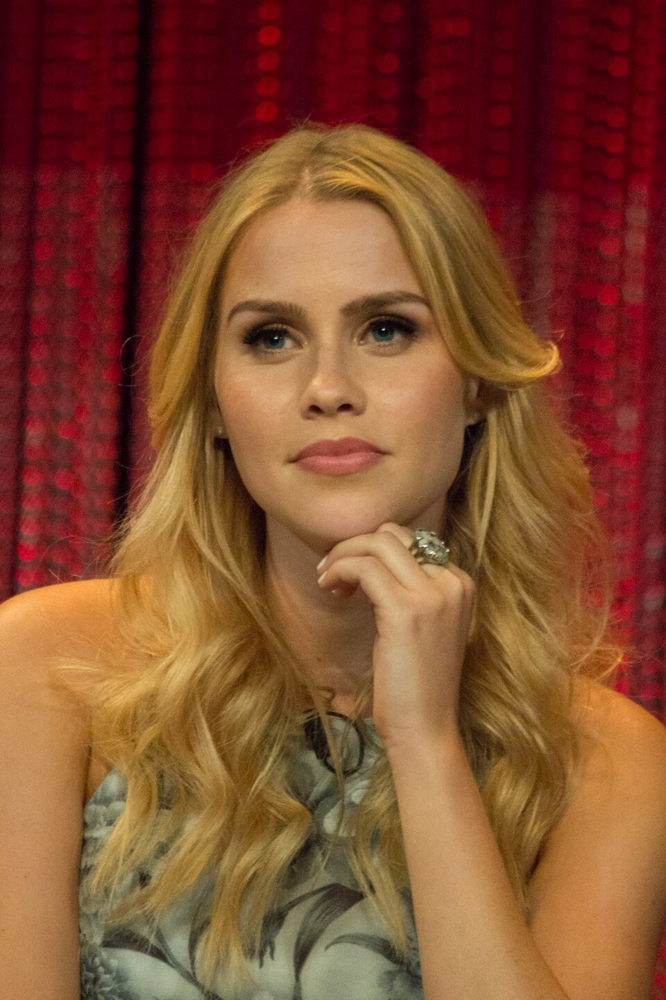

Clair Holt

Steckbrief
Name: Claire Holt
Geboren:11.Juni 1988 in Brisbane,Queensland in Australien
Beruf:Schauspielerin
Alter und Größe: Sie ist 37 Jahre alt und 1,73 m groß
Nationalität:Australisch
Bekannte Rollen
- H20 - Plötzlich NeerjungfrauEmma Gilbert
- Pretty Little LiarsSamara Cook
- 47 Meters DownKate
- The Vampire Diaries und The OriginalsRebekah Mikaelson
Persönliches Leben
- Verheiratet mit Andre Joblon
- Drei Kinder
- Frühere Ehe mit Matthew Kaplan
Hobbys und Fähigkeiten
Sie hat eienen schwarzen Gürtel in Tae - kwon - do sie ist auch im Schwimmen,Volleyball und Wasserball aktiv
Zusätzliche Informationen
Sie besitzt seit November 2019 die US-Staatsbürgerschaft zusätzlich zu ihrer australischen
Seit 2023 betreibt sie eine eigene Website, auf der sie Inhalte zu Mode, Make-up und Themen rund um die Mutterschaft teilt
Ende 2025 kündigte sie an, sich vorerst eine Schauspielpause zu gönnen, um sich voll auf ihre Familie zu konzentrieren